夢フェスタ出雲で美味しいものをいただきました。
2014/10/11
オブジェがあるといいですね。
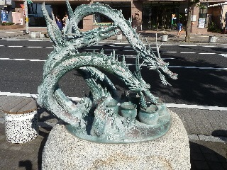
とりあえず記念に写真撮っておこう！って気分になります。
観光地にこうゆうのあるといいですね。
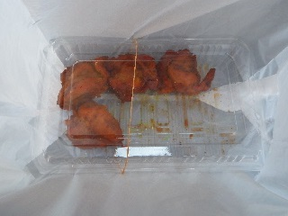
お祭りの屋台で、タンドリーチキンがあったので買って食べました。
普段食べれないものが食べれるっていいですね。
カレー味の効いた柔らかい鶏肉で美味しかった。
今日は美味しい牛肉の試食会もありました。
アンケートに答えたら無料で牛肉が食べれて良かったです。
島根県出雲市今市町
2014/10/11
オブジェがあるといいですね。

とりあえず記念に写真撮っておこう！って気分になります。
観光地にこうゆうのあるといいですね。

お祭りの屋台で、タンドリーチキンがあったので買って食べました。
普段食べれないものが食べれるっていいですね。
カレー味の効いた柔らかい鶏肉で美味しかった。
今日は美味しい牛肉の試食会もありました。
アンケートに答えたら無料で牛肉が食べれて良かったです。
2012/10/07
夢フェスタっていえば利き酒大会なイメージがあったんですが、今年はありませんでした。 残念でした。
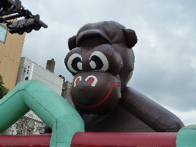
でも毎年このゴリラ君はいますね。
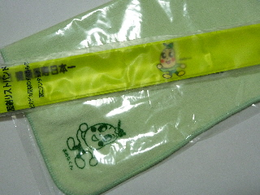
健康についてのアンケートをしたら景品をいただきました。
ちゃんと使おうと思います。
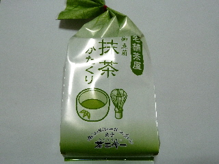
スタンプラリーの景品では抹茶カタクリをもらいました。
今日は雨が降ってたんですが、仮面ライダーショーがあったので人出が多かったです。
仮面ライダーの力は偉大ですね。
2011/10/08
夢フェスに行ったんですが、タイミング悪くてイベントとかあんまりやっていませんでした。
2日間と長いのでしょうがないです。
このイベントは商店街のためのイベントで、買い物メインなので、スタンプラリー（チケット必要）をしながらお店を見て回りました。
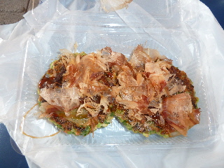
出雲市駅付近で買ったネギ焼きです。（写真は2枚です。）
ネギが沢山入っていたんですけど、しっかり火が通っているので、食べやすかったです。
駅付近は毎回狭いスペースでいろいろ出店やイベントあるので、にぎやかな感じがして活気があって好きです。
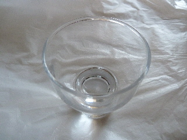
チケットについてるのできき酒をしました。
昼間っからお酒を飲みたくなかったので、匂いだけをたよりにやってみたら残念賞でした。
ガッカリです。
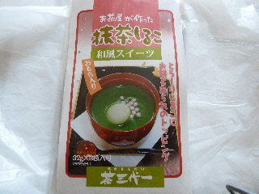
チケットで地元特産品をもらいました。
今年は地元らしい商品をみつけました。毎年こんなんだといいですね。
チケットは当日600円、前売り500円でした。
お子さんがいる人は遊具で遊べるのでいいですが、そうじゃない人は必要ないかもしれません。
2010/10/09
今年はJR荘原・直江・出雲市駅 開業100周年ってことで、出雲市役所にミニSLが大集合していました。
ミニSLっていうと蒸気機関車ないイメージがありますが、電車や新幹線もあるんですね。
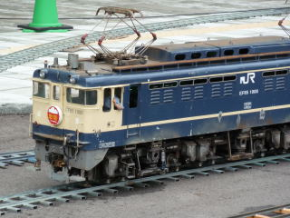
出雲号もありました。運転手さんが乗っててリアルですね。
きき酒大会では2本日本酒を頂きました。
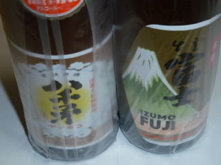
八千矛-ヤチホコ-（古川酒造）と出雲富士（富士酒造）です。
さっそく八千矛を飲んだんですが、スッキリとしていて軽く、飲みやすかったです。
スタンプラリーの景品で和菓子を貰いました。
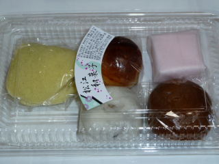
なんと！出雲市のイベントなのに「松江和菓子」です。
松江市のなかじ製菓さんのものでした。松江の和菓子っていうと伝統的な干菓子のイメージが強かったんですが、色々あるんですね。
2009/10/10
私が行った時間は「ちびっ子駅伝大会」っていうのがやってて、賑やかでフェスティバルっぽい感じがしていて良かったですが、途中で雨が降ったりして残念でした。
大通りの駅伝にお客さんが集まっていたので、周りのお店は空いてて買い物がしやすかったです。
スタンプラリーをしながらノンビリとお店を回れました。
お昼時でしたが、出雲商工会議所女性会がやってたぜんざいコーナー付近も空いてたので、のんびりと椅子に座って食事が出来て良かったです。
今回いいな～って思ったのは、アトネスいずもの外のテントで、果物を販売していた所のフルーツポンチです。コップ1杯100円でお手ごろ価格なんですが、果物が沢山入って甘くて美味しかったです。お勧めでした。
2008/10/12
2日連続で夢フェスタに行きました。
日曜日はお客さんが多いですね。今日は子供達によるミニ駅伝があったため、歩行者天国だった大通りが封鎖され、歩行スペースがぐっと減ったせいもあり、とっても混んでて賑やかでした。イベントは賑やかなほうがいいですね。
昨日と今日とではイベント内容や、出展しているお店がちょっと違っていたので、2日続けて行ってもよかったかなと思いました。（近くなので気軽にチョコっと行けたので。ガソリン代を考えると遠くのイベントはなかなかいけないです。）
2008/10/11
今日は天気もいいし、炎神戦隊ゴーオンジャーショーもあるのできっと親子連れでいっぱいかなと思ったんですが、そうでもなかったです。
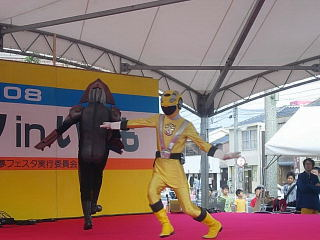
出雲市のイベントって、土曜日の朝はわりとすいてて快適な事が多い気がします。まだ商品が出来ていない所なんかもありましたけど、お店の商品を見たり買ったりするのにはとっても良かったです。
歩行者天国になってる道路の一部が舗装したてで、ちょっと嫌な臭いがしていたのがちょっとだけガッカリでした。
2007/10/7
このイベントは今年が10周年になるそうです。
オープニングで何故か餅まきをしてたんですが、自分のいるところに1つ飛んできたので、1つget出来ました。
お餅の量が多くなかったし、手ぶらの人も結構いたのでちょっとラッキーでした。
出展のお店は毎年一緒かなと思ってたんですが、なくなってたり、新規の所があったりするんですね。
なんとなく去年の方がにぎわってたような気がしました。（私が歳を1つとったせいかもしれませんけど。）
桃花園のごま団子を試食したら、ごまの風味がよく出てて美味しかったです。「これは帰りに買って帰ろう！」って思ったんですが、色々歩いていたら疲れてしまって帰りには寄れませんでした。それが残念でした。
今日はいい天気だったので、おまつり的にはいい感じでしたね。
色々なお店や、小さいイベントがごちゃごちゃやってましたが、私はバンブーのパイナップルジュース（100円）とサーターアンダキー（5個200円）がお得な感じがして一番良かったです。
両方ともシンプルな味わいで食べやすかったですし、値段の割りに量が多くて満足満足でした。
明日もありますので、行かれる方はちらっと見てみてはいかがでしょう？